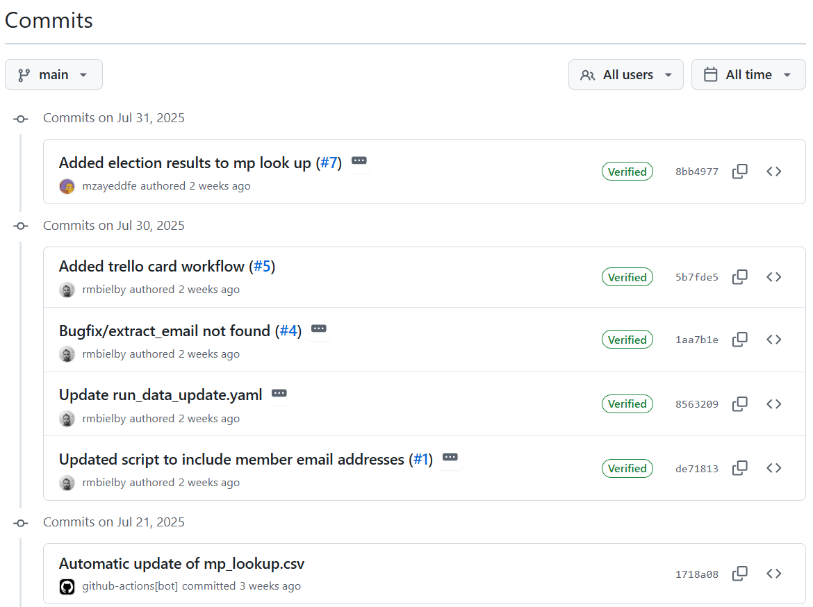

How to use the DfE’s MP look-up table
1 Introduction
This document outlines how to access and use the DfE’s MP Parliamentary Constituency look-up table.
2 Quick look guide
3 What does the MP look-up table contain?
The look-up table contains a single row for each current parliamentary constituency. Each row currently contains the following items:
- Parliamentary constituency code
- Parliamentary constituency name
- Member ID of current sitting MP
- Full title of current sitting MP
- Preferred display name of current sitting MP
- Political party of current sitting MP
- Primary e-mail address of current sitting MP
- Parliamentary constituency election result from the 2024 general election
- Local authority district names and codes that fall within the parliamentary constituency
- Local authority names and codes that fall within the parliamentary constituency
- Mayoral combined authority names and codes that fall within the parliamentary constituency
The MP look-up table is automatically updated every Monday if any changes to MPs are available.
4 Viewing the MP look-up table
The look-up table can be viewed on GitHub: mp_lookup.csv.
Note that you may need to scroll left to right and top to bottom to view all the available data.
5 Downloading the MP look-up table
The latest version of the look-up table can be downloaded by clicking the “Download raw file” button above the table as displayed on GitHub.
This download will retrieve a CSV copy of the look-up table that can be opened in Excel and PowerBI or with developer tools such as R or Python. Alternatively if you want to connect to the data using code, use the direct link to the raw mp_lookup.csv.
6 Reviewing recent updates to the look-up table
Any recent changes can be reviewed on GitHub by viewing the github-actions[bot] project history.

Any changes listed in the history not titled Automatic update of mp_lookup.csv are likely to be updates to the underlying code made by the development team. You can filter to just view the automated updates by selecting ‘github-actions[bot]’ in place of ‘All users’ from the dropdown filter at the top right of the history page.
Clicking on any of the listed commit titles (e.g. Automatic update of mp_lookup.csv) will provide details of all changes made in a spcific update:

The left hand column above shows the state of the look-up prior to the update and the right hand side shows the state after the update. Changes are marked in red in the previous version (left) and green in the updated version (right).
7 Sources
The MP data is sourced from the UK Parliament API and the Open Geography Portal using the following R packages:
The election results data is sourced from the ‘candidate-level general election result data’ CSV file from the UK Parliament election results page.
7.1 Location updates
Location information (for example LADs / LAs) will not be updated until a new version of the relevant source data is released. The dfeR package contains the source data from the Open Geography Portal, we will update there when new versions are available.
7.2 Locations
The relationship between Parliamentary constituencies and Local authorities, Local authorities districts and Mayoral combined authorities is not always neat, for example, some constituencies span multiple local authorities, and often only cover small parts of those local authorities. As such we have listed all relevant locations that overlap with the constituency boundaries regardless of the size of the overlap.
LAD and LA codes include both 2024 and 2025 variants, as not everywhere is using 2025 yet. The 3 digit ‘old’ LA codes only have 2024 versions available on GIAS. This only affects a handful of LADs / LAs that changed code (but not name) in 2025, for example Sheffield changed from E08000019 to E08000039 ONS LAD changes 2024 - 2025.
Greater London Authority is not included in the lookups from ONS but has been added as the mayoral area for all Local authority districts that start with E090....
For a more detailed breakdown of the locations and codes, and also for easier manipulation of the data using code, please see the geo_hierarchy dataset in the dfeR package